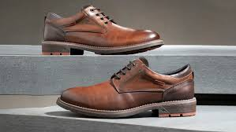

Gdl Shoes  |
Inicio |
Productos |
| |
 |
¡Bienvenidos a GDL Shoes, tu destino de moda para calzado elegante y cómodo! En GDL Shoes, nos enorgullece ofrecer una amplia selección de zapatos y Crocs que combinan estilo y comodidad para satisfacer tus necesidades diarias.
En nuestro catálogo, encontrarás desde elegantes zapatos formales hasta opciones casuales y modernas que se adaptan a cualquier ocasión. Nos esforzamos por ofrecer productos de alta calidad que no solo resalten tu estilo personal, sino que también brinden la comodidad que necesitas en tu día a día. |
 |
 |
¿Qué nos hace únicos? En GDL Shoes, no solo nos enfocamos en la moda, sino también en la funcionalidad. Nuestros Crocs están diseñados para brindar confort durante todo el día, ya sea que estés en casa, en la oficina o disfrutando de actividades al aire libre.
En nuestra tienda, no solo encontrarás calzado excepcional, sino también un servicio al cliente excepcional. Nos dedicamos a proporcionar una experiencia de compra sin complicaciones, garantizando la satisfacción de nuestros clientes en cada paso del camino. |
   |